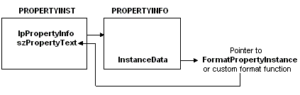

Network Monitor calls the FormatProperties function to format the data that is displayed in the details pane of the Network Monitor UI. Typically, FormatProperties is called to format the summary line for a protocol, and then to format all the property instances of the protocol within a frame. However, Network Monitor does not identify the number of times that FormatProperties is called for a specific parser.
When calling FormatProperties, Network Monitor provides a PROPERTYINST structure for each property that it displays. The PROPERTYINST structure provides information about the data to be displayed, including a pointer to the PROPERTYINFO structure that specifies the function to use to format the displayed data property.
[!Note]
A PROPERTYINFO structure is specified when adding a property to the property database of the parser.
Â
Network Monitor identifies the format function to call for each property instance. The InstanceData member of the PROPERTYINFO structure can specify the following:
The FormatPropertyInstance function to use the generic formatter that Network Monitor provides.
– or –
The name of a custom format function that the parser provides.
The FormatPropertyInstance and the custom format functions return the formatted data that is displayed in the details pane of the Network Monitor UI.
The following illustration shows how Network Monitor identifies the function to call for each property instance.

The following procedure identifies the steps necessary to implement FormatProperties.
To implement FormatProperties
The following is a basic implementation of FormatProperties.
#include <windows.h>
DWORD BHAPI MyProtocolFormatProperties( HFRAME hFrame,
LPBYTE pMacFrame,
LPBYTE pBLRPLATEFrame,
DWORD nPropertyInsts
LPPROPERTYINST p)
{
while( nPropertyInsts-- > 0)
{
( (FORMAT) p->lpPropertyInfo->InstanceData) ) (p);
p++;
}
return BHERR_SUCCESS;
}
Â
Â